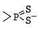
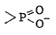
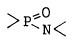
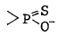
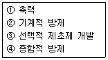

식물보호기사 (2003-03-16 기출문제)
1과목: 식물병리학
1. 흰가루병균(白粉病菌)이 형성하는 포자의 종류는?
- 자낭포자
- 유주포자
- 담자포자
- 접합포자
(정답률: 73%)

2. 벼 오갈병을 매개하는 곤충으로만 된 것은?
- 벼멸구 - 애멸구
- 애멸구 - 끝동매미충
- 진딧물 - 멸구류
- 끝동매미충 - 번개매미충
(정답률: 77%)
3. 못자리나 기계이앙을 위한 상자 육묘에서 문제가 되는 벼의 병은 무엇인가?
- 이삭누룩병
- 탄저병
- 흰가루병
- 잘록병
(정답률: 78%)
4. 수박 덩굴쪼김병균의 월동처는 어디인가?
- 매개곤충의 알
- 토양
- 저장고
- 중간기주
(정답률: 87%)
5. 유성세대가 없는 불완전균에서 일어나며 영양 균사에서 유성생식과 같은 유전적인 재조합이 일어나는 현상을 무엇이라 하는가?
- 접합
- 형질전환
- 형질도입
- 준유성교환
(정답률: 61%)
6. 다음 병 중 병원균이 이종기생하는 것은?
- 배나무 붉은별무늬병
- 배나무 검은별무늬병
- 배나무 화상병
- 사과나무 흰가루병
(정답률: 83%)
7. 다음의 식물병 병원체 중 핵산으로만 구성되어 있으며 그 크기가 가장 작은 것은?
- 바이러스(virus)
- 바이로이드(viroid)
- 파이토플라스마(phytoplasma)
- 스피로플라스마(spiroplasma)
(정답률: 82%)
8. 뽕나무 오갈병의 병원(病原)은?
- 바이러스(virus)
- 식물세균(plant bacteria)
- 진균(fungi)
- 파이토플라스마(phytoplasma)
(정답률: 84%)
9. 벼 줄무늬잎마름병의 병원(病原)은?
- 바이러스
- 파이토플라스마
- 세균
- 진균
(정답률: 67%)
10. 식물 파이토플라스마병의 증상으로 잘 나타나는 병징은?
- 총생(도깨비집)
- 괴저반점
- 모자이크
- 잎말림(권엽)
(정답률: 63%)
11. 복숭아나무 잎오갈병의 전형적인 병징은?
- 천공
- 이상비대
- 위조
- 도장
(정답률: 65%)
12. 배추에 모자이크 병징을 일으키는 바이러스에는 오이 모자이크 바이러스(CMV)와 순무 모자이크 바이러스(TUMV)가 있다. 이들의 전염 방식은?
- 충매 전염
- 토양 전염
- 종자 전염
- 꽃가루 전염
(정답률: 77%)
13. 병원균의 새로운 레이스가 생길 때마다 저항성이 무너지는 경우에 해당하는 기주체의 저항성은?
- 수직 저항성
- 수평 저항성
- 레이스 비특이적 저항성
- 비기주 저항성
(정답률: 66%)
14. 잎, 나뭇가지, 열매 등에 발생하고, 잎에는 검은색 작은 병무늬가 생기며 나중에 부정형이 되고 가지에는 타원형의 움푹한 흑갈색 병무늬가 생기며, 어린 열매는 딱딱해지고 쪼개지기도 하는 과수의 병은?
- 배나무 붉은별무늬병
- 배나무 검은별무늬병
- 배나무 검은무늬병
- 배나무 줄기마름병
(정답률: 51%)
15. 모잘록병(Pythium)은 어떤 균류에 속하는가?
- 자낭균류
- 불완전균류
- 난균류
- 담자균류
(정답률: 43%)
16. 생물학적 진단법이 잘 이용되지 않는 병은?
- 벼 오갈병
- 토마토 시들음병
- 사과나무 자주날개무늬병
- 벼 흰잎마름병
(정답률: 48%)
17. 산성토양에서 더 많이 발생하는 병은?
- 감자 더뎅이병
- 밀 마름병(Take-all)
- 배추 무사마귀병
- 목화 뿌리썩음병(Verticillium wilt)
(정답률: 74%)
18. 식물의 병에 대한 화학적 저항성과 가장 관계가 먼 것은?
- Tenuazonic acid
- Protocatechuic acid
- Pathogenesis-related protein
- Hydroxyproline-rich glycoprotein
(정답률: 36%)
19. 잎에만 발생하고 본 잎에서는 처음에는 수침상의 점무늬가 생기고 병무늬 가장자리가 잎맥으로 포위되어 있는 부정형 다각형의 담갈색 무늬로 발전하며 심하면 잎이 윗쪽으로 말리고, 습기가 많으면 병무늬 뒷면에 서리같은 가루모양의 흰색곰팡이가 생기는 병은?
- 십자화과 작물의 모잘록병
- 오이 노균병
- 토마토 역병
- 배추 무사마귀병
(정답률: 87%)
20. Agrobacterium 에 의한 뿌리혹병의 생물적 방제에 사용하는 균은?
- Agrobacterium tumefaciens
- Agrobacterium rhizogens
- Agrobacterium citri
- Agrobacterium radiobacter
(정답률: 54%)
2과목: 농림해충학
21. 일반 경종법을 이용하여 해충을 방제하는 재배적 방제법의 설명 중 틀린 것은?
- 예방적 조치이다.
- 적은 경비로 목적을 달성할 수 있다.
- 해충 문제를 완전히 해결할 수 있다.
- 저항성 해충 출현 등 부작용이 없다.
(정답률: 83%)
22. 다음 수종 중 솔잎혹파리 피해가 심한 수종은?
- 잣나무
- 리기다소나무
- 곰솔(해송)
- 방크스소나무
(정답률: 76%)
23. 곤충의 성페로몬에 관한 설명 중 잘못된 것은?
- 극히 미량만 있어도 효력을 나타낸다.
- 먼거리까지 작용을 한다.
- 한가지 성분으로만 되어 있다.
- 수컷이 성페로몬을 내는 종도 있다.
(정답률: 83%)
24. 유충이 몇 개의 벼잎을 끌어모아 철하고 그 속에 숨어 있다가 해진 후에 나와 잎가부터 먹어 들어가 주맥만 남기는 해충은?
- 줄점팔랑나비
- 벼애나방
- 혹명나방
- 벼잎벌레
(정답률: 61%)
25. 벼메뚜기의 형태를 설명한 내용 중 틀리는 것은?
- 겹눈은 난형으로 광택이 있는 회갈색이다.
- 성충은 길이가 30-38mm이다.
- 알은 길이가 10mm인 긴타원형이고 황색이다.
- 몸은 황록색이며 머리와 가슴은 황갈색이다.
(정답률: 57%)
26. 진달래방패벌레는 어떤 충태로 월동하는가?
- 번데기(용)로 월동한다.
- 성충태로 월동한다.
- 알로 월동한다.
- 유충태로 월동한다.
(정답률: 55%)
27. 벌목의 잎벌과에 속하는 곤충의 촉각모양이 맞는 것은?
- 곤봉모양
- 빗살모양
- 염주모양
- 부채꼴 및 고리모양
(정답률: 46%)
28. 솔잎혹파리에 대한 설명 중 틀린 것은?
- 1929년에 외국에서 처음 들어 왔다.
- 유충은 솔잎을 밑부에서부터 갉아 먹는다.
- 1년에 1회 발생한다.
- 유충으로 땅속에서 월동한다.
(정답률: 50%)
29. 곤충의 4가지 기본환경 요인 중 온도에 대한 설명이다. 설명이 잘못된 것은?
- 대부분의 곤충은 0 - 40℃가 생존범위 온도이다.
- 발육 영점온도 이상의 유효 온도의 합이 일정량에 도달될 때 발육이 끝나는 성질이 있다.
- 월동 중의 곤충들은 조직내에 글리세롤(glycerol)과 같은 동해방어 물질이 생성된다.
- 발육 영점온도는 일반적으로 4℃ 정도이다.
(정답률: 58%)
30. 총채벌레목에 관한 설명 중 틀린 것은?
- 단위생식도 한다.
- 입틀의 좌우가 같다.
- 왼쪽 큰턱이 한개만 발달하였다.
- 불완전 변태를 한다.
(정답률: 79%)
31. 다음 중 천적 방제의 성공 사례가 아닌 것은?
- 미국흰불나방 - 고치벌
- 이세리아 깍지벌레 - 베달리아 무당벌레
- 루비깍지벌레 - 루비깍지좀벌
- 사과면충 - 사과면충좀벌
(정답률: 69%)
32. 벼멸구에 대한 설명 중 틀린 것은?
- 비래 해충이다.
- 주로 벼에 큰 피해를 준다.
- 줄무늬잎마름병을 매개한다.
- 성충은 장시형과 단시형이 있다.
(정답률: 74%)
33. 이화명나방의 가해특성 중 올바른 것은?
- 벼줄기 속에는 단지 1마리의 유충만 있다.
- 한 마리의 유충이 여러 개의 벼줄기를 가해한다.
- 잎집이 말라 죽어도 부러지지는 않는다.
- 피해줄기 속에 배설물은 차 있지 않다.
(정답률: 78%)
34. 배추벼룩잎벌레에 대한 설명 중 옳은 것은?
- 고추의 가장 대표적인 해충이다.
- 성충이 뿌리를 가해한다.
- 일반적으로 작물이 어린 시기에 피해가 많다.
- 번데기로 월동한다.
(정답률: 74%)
35. 통계적 예찰법에서 예찰식을 계산할 때 주의사항으로 틀린 것은?
- 변동량이 극단적인 경우는 제외한다.
- 예측범위를 통계자료의 범위내로 한다.
- 이상발생이나 대발생 예찰에 적용한다.
- 상관관계의 유의성을 충분히 고려한다.
(정답률: 78%)
36. 배추흰나비가 십자화과 채소에 알을 낳는 것은?
- 주광성
- 주화성
- 주수성
- 주촉성
(정답률: 82%)
37. 유효적산온도 법칙에 대한 설명 중 잘못된 것은?
- 발육영점온도 이상의 온량만 관련된다.
- 유효적산온도는 종에 따라 다르다.
- 유효적산온도는 세대에 따라 다를 수 있다.
- 발육영점온도는 최저생존허용온도보다 높다.
(정답률: 46%)
38. 다음 중 토양해충인 것은?
- 송장벌레
- 바퀴
- 개미
- 땅강아지
(정답률: 77%)
39. 메뚜기 큰턱의 운동을 지배하는 신경의 중추는 다음 중 어느 것인가?
- 식도하 신경절
- 제3대뇌
- 후대뇌
- 전대뇌
(정답률: 76%)
40. 곤충의 혈림프로 방출되는 탄수화물의 저장태는 무엇인가?
- 글리코겐
- 무코다당류
- 키틴
- 트레할로스
(정답률: 57%)
3과목: 재배학원론
41. 벼의 추락현상이 발생할 때 벼뿌리를 상하게 하는 주된 물질은?
- 황화수소
- 탄산가스
- 불화수소
- 메탄가스
(정답률: 70%)
42. 중경(中耕) 효과가 아닌 것은?
- 토양중으로 산소 투입효과
- 유해가스의 방출
- 잡초방제
- 병충해 방제
(정답률: 64%)
43. 토양선충의 소독제는?
- Vapam
- EPN
- 밧사
- PCNB
(정답률: 43%)
44. 광부족에 적응성이 가장 약한 작물은?
- 당근
- 강남콩
- 딸기
- 감자
(정답률: 37%)
45. 다음의 작물에서 요수량(要水量)이 가장 적은 작물은?
- 수수
- 메밀
- 밀
- 보리
(정답률: 72%)
46. 단교잡(單交雜 : Single-cross)의 장점과 단점은?
- 잡종강세가 발현되나 종자생산이 적다.
- 균일성이 발현되나 종자생산이 없다.
- 종자생산은 극히 많으나 균일성이 저하된다.
- 수량이 많으나 병해에 약하다.
(정답률: 54%)
47. 윤작(輪作)의 원리에 알맞지 않은 것은?
- 주작물(主作物)은 지역사정에 따라서 다양하게 변하고 있음
- 식량작물(食糧作物)이나 사료작물(飼料作物) 생산의 어느 한쪽에 치중함
- 지력유지를 위하여 콩과작물이나 다비성작물(多肥性作物)이 반드시 포함됨
- 잡초의 경감을 위해서 중경작물(中耕作物)이나 피복작물(被服作物)이 포함됨
(정답률: 77%)
48. 여름작물이 냉온(冷溫)을 만나면 나타나는 현상으로 볼 수 없는 것은?
- 질소, 인산, 칼륨, 규산 등의 양분흡수장해
- 물질의 동화전류의 증가
- 호흡의 감퇴
- 질소동화가 저해되어 암모니아의 축적이 많아짐
(정답률: 74%)
49. 피자식물이 가지는 중복수정에서 염색체의 조성은?
- 배 n, 배유 n
- 배 n, 배유 2n
- 배 2n, 배유 3n
- 배 2n, 배유 2n
(정답률: 75%)
50. 종자의 수명(壽命)에 가장 영향을 적게 미치는 조건은?
- 종자의 수분함량
- 저장습도(貯藏濕度)
- 저장온도(貯藏溫度)
- 광선(光線)
(정답률: 65%)
51. 홍미(紅美)는 어느 작물의 품종명인가?
- 고구마
- 감자
- 땅콩
- 유채
(정답률: 76%)
52. 일대교잡종(一代交雜種)을 많이 이용하는 작물은?
- 벼
- 콩
- 보리
- 옥수수
(정답률: 64%)
53. 포도의 무핵과 형성에 이용되는 생장조절제는?
- Gibberellin
- B-995
- CCC
- MH-30
(정답률: 76%)
54. 토양중에 산소가 부족하고 CO2 농도가 높을 때 가장 흡수가 곤란한 성분은?
- N
- P
- K
- Ca
(정답률: 29%)
55. 유전적으로 고정된 품종이라도 그 내병성이 시일이 경과 함에 따라 비교적 쉽게 변동하는 가장 기본적인 원인은?
- 내병성의 생리적 요인이 변화하기 때문
- 침해병원체의 계통이 변화하기 때문
- 기상환경이 변화하기 때문
- 재배법이 변화하기 때문
(정답률: 69%)
56. 작물생육에 영양원이 되는 무기성분 중 미량원소로만 묶여진 것은?
- 철, 망간, 붕소
- 칼슘, 마그네슘, 붕소
- 몰리브덴, 인, 칼슘
- 질소, 망간, 붕소
(정답률: 75%)
57. 일반적으로 작물에 많이 이용되고 있는 토양수분은 어느것인가?
- 모관수
- 결합수
- 중력수
- 흡착수
(정답률: 80%)
58. 작물이나 과수에 순지르기의 영향이 아닌 것은?
- 생장을 억제시킨다.
- 측지(側枝)의 발생을 많게 한다.
- 개화나 착과(着果)수를 적게 한다.
- 목화나 두류에서도 효과가 크다.
(정답률: 61%)
59. 밭에서 한발 경감대책으로 적당하지 못한 것은?
- 뿌림골을 낮게 한다.
- 뿌림골을 넓게 한다.
- 퇴비를 증시한다.
- 칼륨을 증시한다.
(정답률: 64%)
60. 동상해의 응급대책으로 보온효과가 가장 큰 것은?
- 발연법
- 연소법
- 송풍법
- 살수빙결법
(정답률: 65%)
4과목: 농약학
61. 제충국의 유효성분은?
- rotenone
- pyrethrin
- pyrethrolone
- allethrin
(정답률: 80%)
62. 농약의 독성을 표시하는 것은?
- 잔류허용량
- 안전사용기준
- 중위치사량
- 1일 섭취허용량
(정답률: 69%)
63. 협력제(synergists)의 구조는?
- dichlorophenyl
- phthalylphenyl
- dioxyphenyl
- methylene dioxyphenyl
(정답률: 53%)
64. 비선택성 제초제로 분류되는 농약은?
- 마세트
- 데브리놀
- 씨마진
- 글라신
(정답률: 58%)
65. 다음 농약 성분 중 저투입 고활성 약제는?
- Pyrazosulfuron-ethyl
- Napropamide
- Alachlor
- Pendimethalin
(정답률: 44%)
66. 유기합성 살충제에 속하지 않는 농약은?
- 유기인계
- 설포닐우레아계
- 카바메이트계
- 유기염소계
(정답률: 59%)
67. 농약의 용제로서 갖추어야 될 요인으로 옳지 않은 것은?
- 농약에 대한 용해도가 커야한다.
- 농약의 약효 및 안전성을 저하시켜서는 안된다.
- 농약의 독성을 증대시켜야 한다.
- 용제 자신이 약해를 내서는 안된다.
(정답률: 77%)
68. 농약의 안전성 평가항목 중 일반독성 평가항목에 해당되지 않는 것은?
- 변이원성
- 만성독성
- 신경독성
- 어독성
(정답률: 53%)
69. 주로 원제가 가수분해나 열에 안정한 화합물에 한하여 적용하고 있는 입제의 제제 방법은?
- 압출조립법
- 흡착법
- 피복법
- 분무건조법
(정답률: 63%)
70. 수화제에 많이 쓰이는 증량제는?
- toluene
- sulfamate
- bentonite
- methanol
(정답률: 70%)
71. 농약의 작용기구 규명에 추적자(Tracer)로 쓰이는 방사성 동위원소 중 반감기가 가장 긴 핵종은?
- C14
- P32
- S35
- Hg203
(정답률: 53%)
72. 응애류의 방제 약제인 살비제가 아닌 것은?
- Dicofol(kelthane)
- Propargite(progi)
- Tetradifon(tedion)
- Cinosulfuron(setoft)
(정답률: 41%)
73. 독성(毒性)의 정도를 표시하는데 쓰이지 않는 것은?
- LC50
- LD50
- ED50
- HLB
(정답률: 63%)
74. 유제나 수화제의 살포액 조제 시 고려하지 않아도 될 사항은?
- 알칼리용수나 오염된 물은 약해를 유발시키므로 농약의 희석용수로는 부적당하다.
- 간척지에서 바닷물을 사용 시에는 농약의 주성분 분해가 일어나 약효가 떨어진다.
- 소정의 희석배수를 엄수한다.
- 약제가 균일하게 섞이도록 충분히 혼합한다.
(정답률: 64%)
75. 유기 인화합물을 5가의 P원자를 가진 인산에스테르류가 주된 것으로 5종의 기본형으로 분류된다. 여기에서 포스포로아미데이트(phosphoroamidate)형은?




(정답률: 45%)
76. 수질 오염성 농약에 대한 설명으로 옳지 않은 것은?
- 수서 생물에 피해를 일으킬 우려가 있는 농약이다.
- 수질 환경 보건법과 관련이 있다.
- 공공수역의 수질을 오염시켜 사람에게 피해를 줄 우려가 있는 농약이다.
- 땅 속의 생물이나 가축 등의 피해와는 무관하다.
(정답률: 80%)
77. 우리 나라에서 분제로 가장 많이 사용되는 증량제는?
- 벤토나이트
- 탈크
- 필로필라이트
- 카오린
(정답률: 56%)
78. 농약의 일일 섭취 허용량을 기술한 것 중 옳은 것은?(오류 신고가 접수된 문제입니다. 반드시 정답과 해설을 확인하시기 바랍니다.)
- 농약을 함유한 음식을 하루 섭취하여도 장해가 없는 량
- 농약을 함유한 음식을 일년간 섭취하여도 장해가 없는 량
- 농약을 함유한 음식을 십년간 섭취하여도 장해가 없는 량
- 농약을 함유한 음식을 일생 동안 섭취하여도 장해가 없는 량
(정답률: 32%)
79. 증량제가 갖추어야 할 조건으로 옳지 않은 것은?
- 가급적 중성의 것을 택하도록 하여야 함
- 비중이 너무 크거나 작으면 안됨
- 증량제는 흡습성이 있어야 함
- 증량제는 저장 중 주제에 작용해서 분해되는 성질을 가지면 안됨
(정답률: 69%)
80. 농약의 살포액 조제에 대한 설명으로 옳지 않은 것은?
- 전착제는 가용할 때 물에 잘 녹인 후 사용하는 것이 좋다.
- 수화제는 소요량의 수화제와 소량의 물을 작은그릇에 넣고 저은 다음 다시 소요량의 물을 부어 사용한다.
- 유제의 원액에 침전물이 있을 때에는 따뜻한 물을 가하여 침전물이 없어진 다음에 조제한다.
- 농약살포액조제 시 원액이 잘 용해되기 위하여 사용하는 물은 온도가 높은 것이 좋다.
(정답률: 71%)
5과목: 잡초방제학
81. 예방적 잡초방제와 관련이 없는 것은?
- 파종전 작물 종자에 섞여있는 잡초종자를 철저하게 가려낸다.
- 잡초의 발생에 불리한 제한 관개와 제한 경운을 실시한다.
- 농기계와 기구에 붙어있는 잡초종자를 깨끗이 청소 한다.
- 퇴비는 미부숙 상태로 사용한다.
(정답률: 76%)
82. 종자 휴면의 원인이 될수 없는 것은?
- 종피의 불투기성
- 생장조절물질의 과다
- 배의 미숙
- 종피의 기계적 저항
(정답률: 64%)
83. 작물과 잡초와의 경합요인이 될 수 없는 것은?
- 영양분
- 수분
- 광선
- 성숙기
(정답률: 76%)
84. 겨울잡초만으로 짝지워진 것은?
- 냉이, 뚝새풀, 피
- 점나도나물, 벼룩이자리, 벼룩나물
- 뚝새풀, 비름, 별꽃아재비
- 벼룩나물, 냉이, 쇠비름
(정답률: 51%)
85. 작물과 잡초와의 경합해(競合害)로 나타나는 작물의 증상은?
- 작물의 엽면적이 커진다.
- 광합성량(光合成量)이 줄어든다.
- 건물중(乾物重)은 많아진다.
- 분열수도 많아진다.
(정답률: 76%)
86. 식물 표면에서 제초제의 흡수 과정과 관련된 설명 중 틀린 것은?
- 비극성(친유성) 제초제는 큐티클 납질층을 친수성보다 잘 통과한다.
- 친수성 제초제의 통과는 펙틴이 높고 다음이 큐틴이며 납질은 통과가 어렵다.
- 셀룰로오스층은 촘촘하여 비극성 및 극성 제초제 모두 투과가 어렵다.
- 계면활성제는 극성 제초제가 큐티클 납질층을 잘 통과하도록 도와준다.
(정답률: 59%)
87. 잡초의 전파 방법 중 사람이나 동물에 부착하여 운반되는 잡초는?
- 민들레
- 소리쟁이
- 도꼬마리
- 여뀌
(정답률: 83%)
88. 아래 보기 중 잡초방제방법의 발달 순서로 맞는 것은?

- ① → ② → ③ → ④
- ① → ② → ④ → ③
- ① → ③ → ② → ④
- ② → ① → ③ → ④
(정답률: 75%)
89. 화학방제법에 대한 생물적 방제법의 장점 중 잘못된것은?
- 방제비용이 적게 든다.
- 잔류오염의 염려가 없다.
- 처리가 용이하다.
- 방제효과가 빨리 나타난다.
(정답률: 54%)
90. 다음 제형 중 수용성이 아닌 원제를 아주 작은 입자로 미분화시킨 분말로서 물에 분산시켜 사용하는 것은?
- 수화제
- 수용제
- 유제
- 입제
(정답률: 72%)
91. 다음 중 논에 사용하는 것이 부적당한 제초제는?
- 부타벤설입제
- 이사디액제
- 옥사존유제
- 알라유제
(정답률: 54%)
92. 작물 파종 후 초관형성기까지는 잡초와의 경합으로 인해 작물 생육에 영향이 큰 시기로 이 시기를 무엇이라고 하는가?
- 잡초경합허용기간
- 잡초경합한계기간
- 잡초경합이용기간
- 잡초경합최대기간
(정답률: 75%)
93. 논 제초제의 약해 발생요인이 아닌 것은?
- 건묘이식
- 이앙심도가 얕은 경우
- 연약한 도장묘
- 과잉살포
(정답률: 62%)
94. 농경지 잡초를 가장 잘 설명한 것은?
- 농경지나 야생상태에 발생하는 모든 잡초
- 논에만 발생하는 잡초
- 일반잡초와는 달리 농경지에만 적응하여 발생하는 잡초
- 밭이나 야생상태에 발생하는 잡초
(정답률: 67%)
95. 식물체내에서 일어나는 제초제 분해반응 중 맞지 않는 것은?
- 인산화 반응(phosphorylation)
- 히드록시 반응(hydroxylation)
- 탈카르복시 반응(decarboxylation)
- 탈알킬 반응(dealkylation)
(정답률: 57%)
96. 생육억제물질에 의한 잡초 종자의 휴면을 타파하는 방법이 아닌 것은?
- 저온습윤 처리
- 변온 처리
- 생장촉진제 사용
- 황산 처리
(정답률: 52%)
97. 외국에서 유입된 대표적인 외래잡초로만 구성되어 있는 것은 어느 것인가?
- 올챙이고랭이, 미국자리공, 생이가래
- 미국개기장, 단풍잎돼지풀, 서양민들레
- 서양민들레, 올방개, 방동사니
- 단풍잎돼지풀, 미국가막사리, 중대가리풀
(정답률: 75%)
98. 다음 중 논 다년생잡초로만 묶여 있는 것은?
- 물피, 알방동사니, 사마귀풀
- 참방동사니, 하늘지기, 중대가리풀
- 나도겨풀, 올방개, 가래
- 한련초, 생이가래, 큰고추풀
(정답률: 75%)
99. 농업에 잡초가 존재하는 이유를 설명한 것 중 잘못된것은?
- 가벼운 종자를 다량 생산하기 때문이다.
- 불량한 환경조건에 적응력이 높기 때문이다.
- 번식 능력이 높고 다양하기 때문이다.
- 휴면성이 결여되어 있기 때문이다.
(정답률: 78%)
100. 작물과 잡초의 경합 중 양분경합에서 수량에 가장 크게 관여하는 비료성분은?
- 마그네슘(Mg)
- 질소(N)
- 인산(P)
- 칼륨(K)
(정답률: 78%)